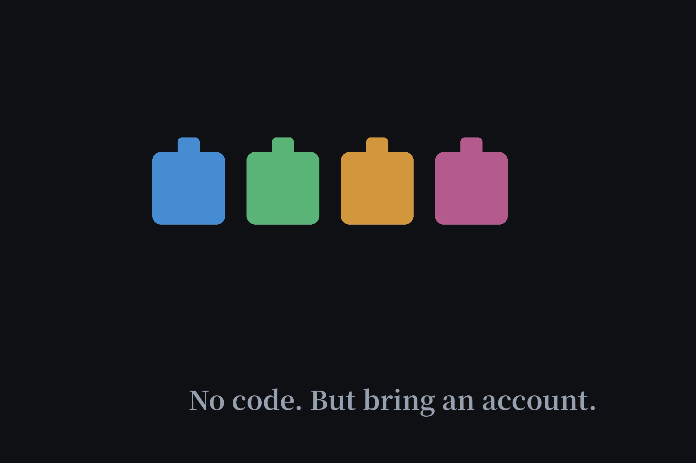

No-Code AI Agent Builders Tested: What Free Actually Gets You (2026)
People search "create free ai agents" hoping to build without code — and ideally without the account-creation dance our directory exists to avoid. I visited Voiceflow, Botpress, Relevance AI, and Lindy as a logged-out visitor. Blunt result: every single one requires an account before you build anything. But "free" means wildly different things across the four, so here's the honest ranking.

The short answer, up front
| Builder | Build without sign-up? | Free tier | Credit card? |
|---|---|---|---|
| Botpress | No | 100 conversations, 3 agents, 3 seats | No |
| Lindy | No | $50 credits, expire in 7 days | No |
| Voiceflow | No | One-time credits, don't renew | No |
| Relevance AI | No | No public free tier | — |
Why building always needs an account
This is the key distinction: using an AI agent can be anonymous — that's our directory's whole premise — but building one means the platform stores your agent, runs compute on your behalf, and bills usage to someone. Every builder puts the registration wall exactly where the builder starts. Clicking "Get started" on Voiceflow opens a Create-account dialog; Botpress routes to an SSO registration page; Lindy's "Try for free" lands on a signup form titled "Let's get you building." There is no anonymous builder, and there probably never will be.
Botpress — the most generous free tier
If you're going to create one account, make it this one. The free plan includes 100 conversations, 3 AI agents, 3 seats, plus 1K table rows and 100MB each of vector and file storage — no credit card, no top-up traps. That's enough to build and actually run a small real agent, not just click through a demo. The catch is the 100-conversation ceiling with no overage option: when it's gone, it's gone until you upgrade.
Lindy — best for a no-card trial sprint
Lindy hands you $50 in credits with no credit card required — the most money-like free offer of the four. The catch is the clock: credits expire 7 days after signup. That's a trial sprint, not a free tier. Fine if you want to test-drive building an AI employee over a weekend; useless if you want something that keeps running.
Voiceflow — look closely at "free trial"
Voiceflow's pricing page says "Free trial, no credit card required," which sounds generous until you read their docs: the free plan's credit grant is one-time and does not renew. The exact amount isn't even published — you only see it after logging in. One-time credits plus undisclosed amounts is the weakest "free" of the three that have one. Fine for learning the interface; don't plan a project on it.
Relevance AI — enterprise only
Relevance AI doesn't list a free tier at all — the pricing page shows Enterprise plans and the FAQ tells you to contact sales for a call. The "Try it out" button leads straight to a signup form. If you're an individual looking to build free, this isn't your stop.
The honest path for builders
Want no-code and free? Botpress's free tier, one account, no card. Want to just use AI agents with no account at all? That's our directory. And if you can write a little code, self-hosting an open-source framework and pairing it with a no-credit-card API from our free APIs page gets you closest to free-as-in-freedom — at the cost of running the server yourself.
FAQ
Can you build an AI agent without coding and without signing up?
No. Every major no-code builder we checked — Voiceflow, Botpress, Relevance AI, Lindy — requires an account before you can build anything. Building is different from using: our directory lists agents you can use anonymously, but creating one always needs a login.
Which no-code AI agent builder has the best free tier?
Botpress: its free plan includes 100 conversations, 3 AI agents, and 3 seats with no credit card. Lindy gives $50 in credits but they expire after 7 days. Voiceflow's free credits are one-time and don't renew. Relevance AI has no public free tier at all.
Is there a truly free way to create an AI agent?
Truly free and anonymous, no — but developers can self-host open-source frameworks like Flowise and pay only for model API calls, many of which have their own free tiers. See our free APIs page for no-credit-card API options.